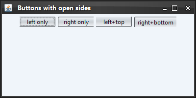

|
Sample code |
import java.awt.FlowLayout;
import java.util.EnumSet;
import javax.swing.*;
import org.pushingpixels.substance.api.SubstanceConstants;
import org.pushingpixels.substance.api.SubstanceLookAndFeel;
import org.pushingpixels.substance.api.SubstanceConstants.Side;
import org.pushingpixels.substance.api.skin.BusinessBlackSteelSkin;
/**
* Test application that shows the use of the
* {@link SubstanceLookAndFeel#BUTTON_OPEN_SIDE_PROPERTY} client property.
*
* @author Kirill Grouchnikov
* @see SubstanceLookAndFeel#BUTTON_OPEN_SIDE_PROPERTY
*/
public class ButtonOpenSideProperty extends JFrame {
/**
* Creates the main frame for <code>this</code> sample.
*/
public ButtonOpenSideProperty() {
super("Buttons with open sides");
this.setLayout(new FlowLayout());
JButton buttonA = new JButton("left only");
// mark button to have open and straight left side
// using side constant
buttonA.putClientProperty(SubstanceLookAndFeel.BUTTON_SIDE_PROPERTY,
SubstanceConstants.Side.LEFT);
buttonA.putClientProperty(
SubstanceLookAndFeel.BUTTON_OPEN_SIDE_PROPERTY,
SubstanceConstants.Side.LEFT);
JButton buttonB = new JButton("right only");
// mark button to have open and straight right side using side constant
buttonB.putClientProperty(SubstanceLookAndFeel.BUTTON_SIDE_PROPERTY,
SubstanceConstants.Side.RIGHT);
buttonB.putClientProperty(
SubstanceLookAndFeel.BUTTON_OPEN_SIDE_PROPERTY,
SubstanceConstants.Side.RIGHT);
JButton buttonC = new JButton("left+top");
// mark button to have open and straight left and top sides
// using set of side constants
EnumSet<Side> leftTopSides = EnumSet.of(SubstanceConstants.Side.LEFT,
SubstanceConstants.Side.TOP);
buttonC.putClientProperty(SubstanceLookAndFeel.BUTTON_SIDE_PROPERTY,
leftTopSides);
buttonC.putClientProperty(
SubstanceLookAndFeel.BUTTON_OPEN_SIDE_PROPERTY, leftTopSides);
JButton buttonD = new JButton("right+bottom");
// mark button to have open and straight right and bottom sides
// using set of side constants
EnumSet<Side> rightBottomSides = EnumSet.of(
SubstanceConstants.Side.RIGHT, SubstanceConstants.Side.BOTTOM);
buttonD.putClientProperty(SubstanceLookAndFeel.BUTTON_SIDE_PROPERTY,
rightBottomSides);
buttonD.putClientProperty(
SubstanceLookAndFeel.BUTTON_OPEN_SIDE_PROPERTY,
rightBottomSides);
this.add(buttonA);
this.add(buttonB);
this.add(buttonC);
this.add(buttonD);
this.setSize(400, 200);
this.setLocationRelativeTo(null);
this.setDefaultCloseOperation(JFrame.EXIT_ON_CLOSE);
}
/**
* The main method for <code>this</code> sample. The arguments are ignored.
*
* @param args
* Ignored.
*/
public static void main(String[] args) {
JFrame.setDefaultLookAndFeelDecorated(true);
SwingUtilities.invokeLater(new Runnable() {
public void run() {
SubstanceLookAndFeel.setSkin(new BusinessBlackSteelSkin());
new ButtonOpenSideProperty().setVisible(true);
}
});
}
}
The screenshot below shows the application frame and buttons with open
sides as set in the code above.

|